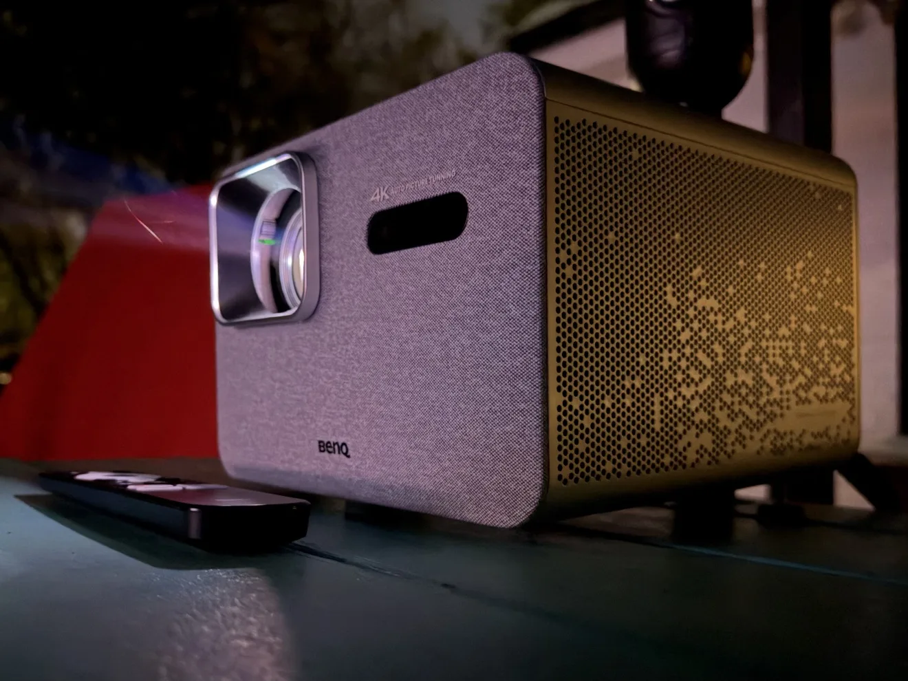

Buying Guide
BenQ Projectors
BenQ is one of the most recommended brands in the projector world, and for good reason. They make DLP projectors across home entertainment, gaming, and business categories, and they are known for accurate out-of-the-box color, which is rarer than it should be at budget prices.
Know which BenQ line you're looking at
- Home entertainment: tuned for movies and TV, usually the best color accuracy of the three lines. The right choice for a living room or dedicated theater.
- Gaming: prioritizes low input lag and high refresh rates. Worth it if you play fast-paced games; overkill if you don't.
- Business / education: built for bright rooms and presentations. High brightness, but color accuracy takes a back seat, so it is not ideal for movie nights.
The specs that actually matter
- Resolution: true 1080p is the sweet spot for budget buyers. The term "Supported 4K" on a 1080p model means it accepts a 4K signal but displays 1080p.
- Brightness (lumens): match it to your room. A dark theater needs far less than a living room with windows. More lumens is not automatically better. It washes out blacks in dark rooms.
- Throw ratio: determines how far back the projector sits for your screen size. Measure your room first and use our calculator.
- Input lag: matters for gaming (look for under about 30ms); irrelevant for movies.
- Lamp vs. LED/laser: traditional lamps are bright and cheap to replace; LED and laser last far longer with no lamp swaps.
What to check before buying
- Do not pay extra for smart features you will never use. A streaming stick is cheaper and better.
- Built-in speakers are a backup, not a solution. Budget for real audio (see our Audio Solutions guide).
- Check the warranty and lamp replacement cost before buying. A cheap projector with an expensive lamp is not cheap.
Brandon's BenQ picks
These are the BenQ models I recommend most often, each for a different job. Compare current prices on Amazon and eBay before you buy.
Disclosure: As an Amazon Associate, I earn from qualifying purchases. I also earn affiliate commissions on qualifying purchases made through links to AV Access, AliExpress, B&H Photo Video, BenQ, BLUETTI, eBay, EcoFlow, JMGO, Nothing Projector, UGREEN, and XGIMI. Links open in a new tab.
BenQ TH575
Best budget BenQ, 1080p all-rounder
My most recommended BenQ under a grand. A bright 1080p image and low input lag cover movies, sports, and gaming alike, at a price that leaves room for a screen. Note it is lamp-based rather than LED, so a replacement lamp is part of long-term ownership.
BenQ TH575i
1080p all-rounder with streaming built in
The upgraded TH575. Same bright 1080p picture for well-lit rooms and the same low input lag for gaming, now with Android TV streaming built in, so movies and sports are covered without adding a separate stick.
BenQ TK710
4K laser, movies and gaming
True 4K with a laser light source, so there is no lamp to replace, plus the low input lag the TK gaming line is known for. The pick when you want 4K sharpness that holds up in a living room, not just a dark theater.
BenQ TK705i
4K lifestyle projector, reviewed by Brandon
The BenQ I reviewed in depth. 4K LED picture, Google TV built in, and a gimbal stand that makes setup and ceiling projection easy. Read my full TK705i review for the photo tour and my testing notes.
BenQ W2720i
Dedicated theater pick, 4K LED home cinema
The theater model. A 4K LED home cinema projector built for a light-controlled room, with wide color and the contrast that only shows off in the dark. This is BenQ's current dedicated home cinema machine, and the one to build a real theater around.
Choosing between specific models? A short consultation can save you from an expensive mismatch. Book one here.